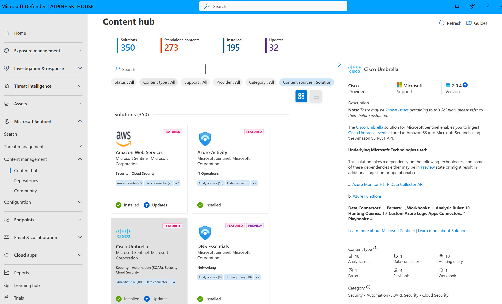

Overview
Microsoft Sentinel is Microsoft’s cloud-native SIEM. It is enabled on an Azure Monitor Log Analytics workspace, collects data through connectors, and supports detection, investigation, hunting with Kusto Query Language (KQL) and automated response through automation rules and Azure Logic Apps playbooks.
Microsoft is moving Sentinel into the Microsoft Defender portal as part of its unified security operations experience. According to Microsoft’s documentation, after March 31, 2027 Sentinel will no longer be supported in the Azure portal. Microsoft has also added a Sentinel data lake tier for low-cost long-term retention and querying, and a Sentinel MCP server that lets AI agents query Sentinel data; some of its tools consume Security Copilot compute units (SCUs).
Billing is consumption-based. Analytics-tier ingestion is charged pay-as-you-go per GB or through commitment tiers starting at 100 GB per day, data lake usage has its own meters, and several Microsoft sources, such as Azure Activity logs, Office 365 audit logs and security alerts from Defender products, can be ingested at no charge.
Key Features
Data Connectors
Connectors for Microsoft and third-party sources; Azure Activity, Office 365 audit logs and Defender alerts are free to ingest.
KQL Hunting
Query, hunt and build analytics rules with Kusto Query Language.
Automation
Automation rules and Logic Apps playbooks for response (Logic Apps billed separately).
Sentinel Data Lake
Low-cost long-term retention with KQL queries, jobs and notebooks, billed on separate meters.
Defender Portal
Sentinel in the Microsoft Defender portal alongside Defender XDR, the only supported experience after March 31, 2027.
MCP Server and Copilot
AI agents can query Sentinel through its MCP server; some tools, such as the entity analyzer, consume Security Copilot SCUs.
Pros & Cons
Advantages
- 31-day free trial for up to 10 GB/day of analytics-tier data
- Free ingestion for several Microsoft data sources and Defender alerts
- Commitment tiers save up to 52% compared with pay-as-you-go, per Microsoft
- No SIEM infrastructure to deploy or maintain
- First 90 days of retention included at no charge
Disadvantages
- Costs grow with data volume and need active management
- Logic Apps, notebooks and Azure Functions used with Sentinel are billed separately
- Raw logs from several Defender and Microsoft Entra ID sources are paid even though their alerts are free
- Azure portal experience ends March 31, 2027, so teams must move to the Defender portal
- Commitment tiers apply per workspace and cannot be shared across workspaces
Pricing
Sentinel is billed on consumption. Per-GB rates vary by region and are listed on Microsoft’s Sentinel pricing page.
Free trial
The first 10 GB/day ingested on the Analytics logs plan is free for 31 days, up to 20 workspaces per Azure tenant.
Pay-as-you-go (analytics tier)
Charged per GB of data ingested; retention beyond 90 days is extra.
Commitment tiers
A fixed daily fee for 100 GB/day up to 50,000 GB/day, with usage above the tier billed at the same discounted rate. Lowering a tier is allowed every 31 days.
Data lake tier
Separate meters for ingestion, processing, storage (billed at 6:1 compression) and queries, plus compute hours for notebooks.
Microsoft lists a 50 GB/day commitment tier in public preview with promotional pricing from October 1, 2025 to December 31, 2026, and advertises up to 5 MB per user per day of free ingestion for key security logs through a Microsoft 365 offer.
Recommended Certifications
Microsoft’s role-based security certifications cover security operations with Sentinel and Defender XDR, identity and Azure security.

SC-900: Security, Compliance, and Identity Fundamentals
Entry-level certification covering security, compliance and identity concepts across Microsoft cloud services.

SC-200: Security Operations Analyst
Investigate, respond to and hunt for threats with Microsoft Sentinel, Defender XDR and Defender for Cloud.

SC-300: Identity and Access Administrator
Implement identity and access management with Microsoft Entra ID, including Conditional Access and Privileged Identity Management.

SC-400: Information Protection (retired)
Replaced by SC-401. Covered data loss prevention, information protection and insider risk in Microsoft 365.

AZ-500: Azure Security Engineer
Secure Azure identity, networking, compute, storage and security operations.
Get Started with Certification
Official Microsoft certification catalog:
Microsoft Learn Credentials →Best Use Cases
Best For:
- Organizations already using Microsoft 365, Defender XDR and Azure
- Security teams that want a SIEM without managing infrastructure
- SOC analysts comfortable with KQL
- Teams that need cheaper long-term log retention through the data lake tier
May Not Be Ideal For:
- Buyers who want a fixed per-user or per-device SIEM price
- Teams that do not want to work in the Azure and Defender portals
- Environments where most data comes from high-volume paid sources and ingestion budgets are tight
Comparison with Competitors
Microsoft Sentinel vs Alternatives
- vs Splunk Enterprise Security: Splunk ES is quote-based with activity, workload or ingest pricing and comes in Essentials and Premier editions; Sentinel publishes per-GB and commitment-tier pricing on Azure.
- vs Rapid7 and Qualys: these focus on vulnerability and exposure management; Sentinel collects and correlates security logs and alerts, including from such tools.
Screenshots & Interface
Explore Microsoft Sentinel's interface:

Frequently Asked Questions
Is there a free trial?
Yes. When you enable Sentinel on a Log Analytics workspace, the first 10 GB/day on the Analytics logs plan is free for 31 days.
Which data is free to ingest?
Microsoft lists Azure Activity logs, Sentinel health data, Office 365 audit logs (SharePoint, Exchange, Teams) and security alerts from Defender products and Defender for Cloud, among others.
Is Sentinel leaving the Azure portal?
Yes. After March 31, 2027 Sentinel will only be available in the Microsoft Defender portal.
What is the Sentinel data lake?
A low-cost tier for long-term retention and querying of security data, billed on separate ingestion, processing, storage and query meters.
Do I need Security Copilot?
No. Copilot is optional; some Sentinel MCP tools, such as the entity analyzer, consume Security Copilot compute units when used.
Final Verdict
Microsoft Sentinel is the natural SIEM for organizations already on Microsoft 365, Defender and Azure: many Microsoft sources ingest for free and there is no infrastructure to run. Its consumption pricing rewards careful data tiering, and teams still using the Azure portal should plan the move to the Defender portal before March 31, 2027.